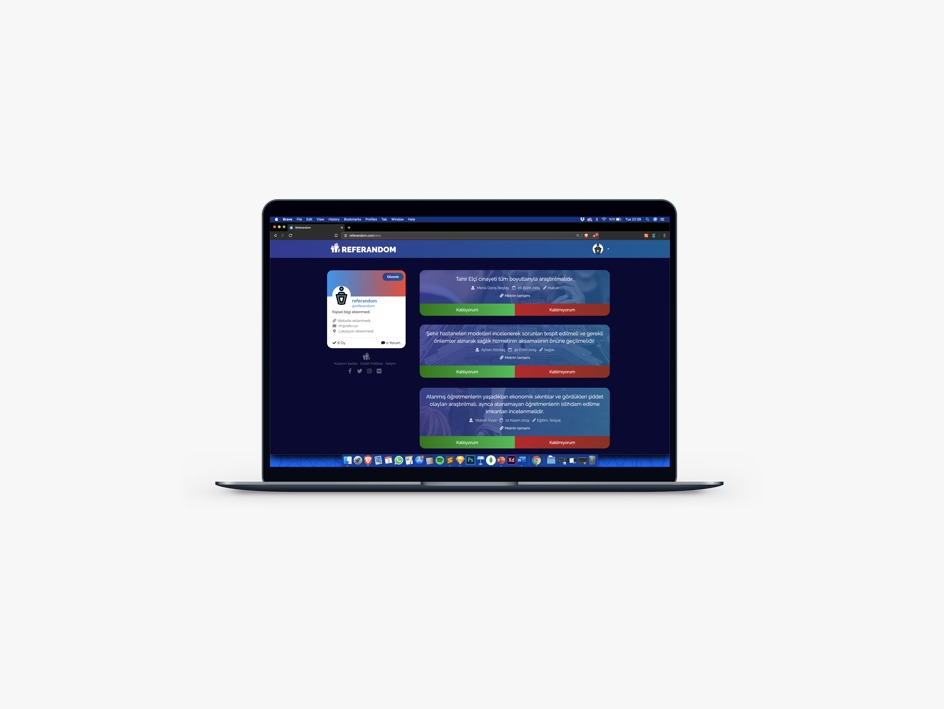

Referandom
Web Development
Referandom is an independent voter network that serves for making Turkey’s representative democracy more accessible.
Website design with
- HTML5/CSS3
- React
- Semantic UI
- Node.js
- MongoDB
- Firebase
More Photos

Web Development
Referandom is an independent voter network that serves for making Turkey’s representative democracy more accessible.